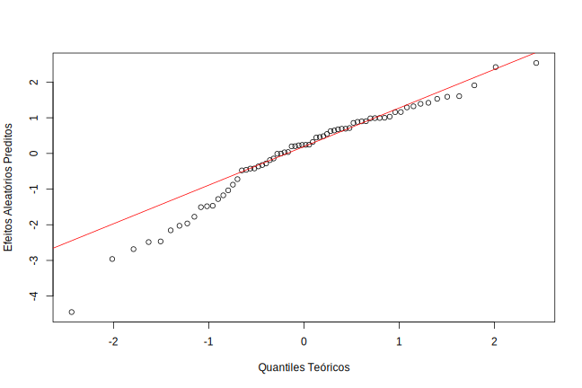

Capítulo 7 Metodologia
Nessa seção é feita a análise das variáveis linguísticas, extralinguísticas e experimentais com o intuito de caracterizar o processo de acentuação tônica. Para entender quais variáveis de fato têm influência construímos modelos multinomiais mistos com os falantes definidos como efeito aleatório. Assim, além de consider a correlação das respostas do mesmo falante e o desbalanceamento na quantidade de respostas de cada um, essa estrutura possibilita a inclusão de variáveis relacionadas às características dos falantes.
As seguintes variáveis foram consideradas no modelo completo: - Variável resposta: Tonicidade de produção - Efeito aleatório: Efeito de cada falante _ Variáveis com efeitos fixos: Tonicidade alvo, Estrutura da palavra, Grupo de classificação, Segmento modificado, Bloco de apresentação, Aleatorizacao, Música, Línguas, Idade, Gênero, Escolaridade, Área de formação
Com isso, foram construídos modelos considerando o nível Paroxítona como categoria de referência da regressão mutinomial. Ou seja, estaremos comparando através de uma função de ligação logito os níveis Oxítona/Paroxítona e Proparoxítona/Paroxítona. A escolha da categoria Paraxítona como referência aconteceu por ela ser considerada a acentuação tônica mais comum na língua portuguesa. A seguir, apresentamos as formulações matemáticas do modelo no contexto do trabalho
\[ ln[\frac{\pi_{ijOxítona}}{\pi_{ijParoxítona}}] = X'\beta_{(O-Pa)} + b_{i(O-Pa)} \] com
\(i\) = 1,..,34 = Falantes
\(j\) = 1,…,\(n_i\) = \(j\)-ésima pseudopalavra acentuada pelo \(i\)-ésimo falante
\(X'\) = Matris de variáveis independentes
\(\beta_{(O-Pa)}\) = Vetor de parâmetros
\(b_{i(O-Pa)}\) = Efeito aleatório relacionado ao \(i\)-ésimo falante
\[ ln[\frac{\pi_{ijProparoxítona}}{\pi_{ijParoxítona}}] = X'\beta_{(Pro-Pa)} + b_{i(Pro-Pa)} \] com
\(i\) = 1,..,34 = Falantes
\(j\) = 1,…,\(n_i\) = \(j\)-ésima pseudopalavra acentuada pelo \(i\)-ésimo falante
\(X'\) = Matris de variáveis independentes
\(\beta_{(Pro-Pa)}\) = Vetor de parâmetros
\(b_{i(Pro-Pa)}\) = Efeito aleatório relacionado ao \(i\)-ésimo falante
Além disso, devido ao experimento relacionado à validação da similaridade/dissimilaridade entre palavra-alvo e pseudopalavra no qual algumas dessas relações não foram de fato validadas (Seção 4), testamos se a exclusão de pseudopalavras não validadas afetaria o resultado do modelo ajustado à base total. Dessa forma, foi possível entender se essa classificação afetava os valores inferenciais ou se poderímos excluir as observações cuja similaridade/dissimilaridade entre palavra-alvo e pseudopalavra não foi validada.
Retirando amostras aleatórias contendo 25% de pseudopalavras não validadas, observou-se que o resultado do modelo é alterado de formas diferentes, a depender da amostra. Logo, entendemos que não seria possível remover apenas uma porcentagem aleatória das pseudopalavras cuja similaridade/dissimilaridade não for validada.
Como explicado anteriormente, essa variável foi utilizada para validar outra variável da pesquisa (Grupo de classificação). Então, para reduzir a incerteza em relação à definição do Grupo de classificação, decidiu-se por ajustar um modelo apenas com as pseudopalavras validadas e quase validadas, excluindo as não validadas.
7.1 Modelos Ajustados
Consideramos dois modelos possíveis: um com a variável Grupo de classificação, que foi a variável construída pela pesquisadora, e outro em que essa variável é separada em duas: Similaridade e Frequência.
Com esse segundo modelo, podemos identificar o efeito marginal da similaridade ou da frequência de forma separada, o que não é possível fazer com a variável Grupo de classificação, que já considera a interação entre essas duas variáveis. Portanto, o processo de ajuste do modelo e seleção de variáveis foi feito para esses dois modelos, descritos a seguir.
7.1.1 Modelo com Grupo de classificação (Modelo 1)
Como o modelo multinomial é constituído de duas regressões neste caso, em que a variável resposta contém três níveis, foi feito um processo de seleção de variáveis backwards manual, considerando o valor-p das estimativas nos dois modelos de forma simultânea.
Adotando 5% como nível de significância, verificou-se que a maior parte das variáveis relacionadas aos falantes não apresentaram significância nos modelos ajustados. Depois de retirar uma a uma as variáveis não significantes nos dois modelos, testamos retirar a variável extralinguística que apresentou apenas um nível significante (Escolaridade), já que essa variável possuía apenas uma observação em um dos níveis.
Comparamos o critério de informação de Akaike (AIC) dos modelos com e sem Escolaridade, o modelo sem Escolaridade apresentou menor AIC, logo, concluímos que a exclusão apresentou melhora no modelo.
Portanto, as variáveis que apresentaram significância em pelo menos um nível foram: tonicidade_alvo, estrutura_palavra, grupo, segmento_modificado, bloco_apresentação e aleatorização.
As Tabelas A.8 e A.9 contêm as estimativas, erros padrões e valores-p dos efeitos fixos obtidos pelo modelo final ajustado. A Tabela A.8 apresenta os valores para o modelo dos níveis Oxítona/Paroxítona e a Tabela A.9 apresenta os valores para o modelo dos níveis Proparoxítona/Paroxítona. É importante observar que, como as variáveis foram selecionadas de forma simultânea para os dois modelos, nem sempre os coeficientes das variáveis serão representadas em ambos as equações, pois podem ter níveis de significância diferentes entre os modelos Oxítona/Paroxítona e Proparoxítona/Paroxítona.
| term | estimate | std.error | statistic | p.value |
|---|---|---|---|---|
| oxítona~(Intercept) | -1.9497069 | 0.2708188 | -7.199305 | 0.0000000 |
| oxítona~tonicidade_alvoparoxítona | -1.3922195 | 0.0754364 | -18.455547 | 0.0000000 |
| oxítona~tonicidade_alvoproparoxítona | -2.0137152 | 0.1056674 | -19.057103 | 0.0000000 |
| oxítona~estrutura_palavraCV-CV-CVC | 4.2931359 | 0.0797580 | 53.827055 | 0.0000000 |
| oxítona~grupo2 | 0.1052218 | 0.0996410 | 1.056009 | 0.2909640 |
| oxítona~grupo3 | 0.5556489 | 0.1031689 | 5.385818 | 0.0000001 |
| oxítona~grupo4 | 0.4185702 | 0.0983536 | 4.255768 | 0.0000208 |
| oxítona~segmento_modificadovogal | 0.1874888 | 0.0644308 | 2.909926 | 0.0036151 |
| oxítona~bloco_apresentacao2 | 0.4266194 | 0.0923129 | 4.621449 | 0.0000038 |
| oxítona~bloco_apresentacao3 | 0.1412840 | 0.0938383 | 1.505611 | 0.1321670 |
| oxítona~bloco_apresentacao4 | 0.3999452 | 0.0964728 | 4.145680 | 0.0000339 |
| oxítona~aleatorizacaon | -0.6377245 | 0.1662861 | -3.835104 | 0.0001255 |
| term | estimate | std.error | statistic | p.value |
|---|---|---|---|---|
| proparoxítona~(Intercept) | -3.6852650 | 0.3509559 | -10.5006500 | 0.0000000 |
| proparoxítona~tonicidade_alvoparoxítona | -0.6209199 | 0.2111748 | -2.9403118 | 0.0032788 |
| proparoxítona~tonicidade_alvoproparoxítona | 1.6686983 | 0.1865004 | 8.9474227 | 0.0000000 |
| proparoxítona~estrutura_palavraCV-CV-CVC | 1.8140990 | 0.1478927 | 12.2663211 | 0.0000000 |
| proparoxítona~grupo2 | -1.3384948 | 0.1845553 | -7.2525410 | 0.0000000 |
| proparoxítona~grupo3 | 0.1631648 | 0.1518148 | 1.0747622 | 0.2824812 |
| proparoxítona~grupo4 | -1.1391548 | 0.1618900 | -7.0365964 | 0.0000000 |
| proparoxítona~segmento_modificadovogal | 0.2943657 | 0.1178233 | 2.4983655 | 0.0124767 |
| proparoxítona~bloco_apresentacao2 | -0.7940043 | 0.1957112 | -4.0570191 | 0.0000497 |
| proparoxítona~bloco_apresentacao3 | -0.2160771 | 0.1583277 | -1.3647457 | 0.1723330 |
| proparoxítona~bloco_apresentacao4 | -0.1794640 | 0.1594542 | -1.1254896 | 0.2603816 |
| proparoxítona~aleatorizacaon | 0.2171223 | 0.2734835 | 0.7939138 | 0.4272456 |
7.1.1.1 Interpretações dos parâmetros (Modelo 1)
A partir da saída percebe-se que, mantidas as demais variáveis em seus respectivos níveis de referência:
A probabilidade de produção oxítona (ao invés de produção paroxítona) quando a estrutura da palavra é CV-CV-CVC é, aproximadamente, 73 vezes a probabilidade de produção oxítona (ao invés de produção paroxítona) quando a estrutura da palavra é CV-CV-CV. Já a probabilidade de produção proparoxítona (ao invés de produção paroxítona) quando a estrutura da palavra é CV-CV-CVC é, aproximadamente, 6 vezes a probabilidade de produção proparoxítona (ao invés de produção paroxítona) quando a estrutura da palavra é CV-CV-CV.
A probabilidade de produção oxítona (ao invés de produção paroxítona) quando a palavra-alvo é paroxítona é, aproximadamente, 0,25 vezes a probabilidade de produção oxítona (ao invés de produção paroxítona) quando a palavra-alvo é oxítona. Já a probabilidade de produção proparoxítona (ao invés de produção paroxítona) quando a palavra-alvo é paroxítona é, aproximadamente, 0,54 vezes a probabilidade de produção proparoxítona (ao invés de produção paroxítona) quando a palavra-alvo é oxítona.
A probabilidade de produção oxítona (ao invés de produção paroxítona) quando a palavra-alvo é proparoxítona é, aproximadamente, 0,13 vezes a probabilidade de produção oxítona (ao invés de produção paroxítona) quando a palavra-alvo é proparoxítona. Já a probabilidade de produção proparoxítona (ao invés de produção paroxítona) quando a palavra-alvo é proparoxítona é, aproximadamente, 5 vezes a probabilidade de produção proparoxítona (ao invés de produção paroxítona) quando a palavra-alvo é proparoxítona.
A probabilidade de produção oxítona (ao invés de produção paroxítona) quando o segmento modificado foi uma vogal é, aproximadamente, 1,2 vezes a probabilidade de produção oxítona (ao invés de produção paroxítona) quando o segmento modificado foi uma consoante. Já a probabilidade de produção proparoxítona (ao invés de produção paroxítona) quando o segmento modificado foi uma vogal é, aproximadamente, 1,3 vezes a probabilidade de produção proparoxítona (ao invés de produção paroxítona) quando o segmento modificado foi uma consoante.
A probabilidade de produção oxítona (ao invés de produção paroxítona) quando a pseudopalavra é do grupo 2 é 0 vezes a probabilidade de produção oxítona(ao invés de produção paroxítona) quando a pseudopalavra é do grupo 1. Já a probabilidade de produção proparoxítona (ao invés de produção paroxítona) quando a pseudopalavra é do grupo 2 é 0,26 vezes a probabilidade de produção proparoxítona(ao invés de produção paroxítona) quando a pseudopalavra é do grupo 1.
A probabilidade de produção oxítona (ao invés de produção paroxítona) quando a pseudopalavra é do grupo 3 é 1,74 vezes a probabilidade de produção oxítona(ao invés de produção paroxítona) quando a pseudopalavra é do grupo 1. Já a probabilidade de produção proparoxítona (ao invés de produção paroxítona) quando a pseudopalavra é do grupo 3 é 0 vezes a probabilidade de produção proparoxítona (ao invés de produção paroxítona) quando a pseudopalavra é do grupo 1.
A probabilidade de produção oxítona (ao invés de produção paroxítona) quando a pseudopalavra é do grupo 4 é 1,52 vezes a probabilidade de produção oxítona (ao invés de produção paroxítona) quando a pseudopalavra é do grupo 1. Já a probabilidade de produção proparoxítona (ao invés de produção paroxítona) quando a pseudopalavra é do grupo 4 é 0,32 vezes a probabilidade de produção proparoxítona (ao invés de produção paroxítona) quando a pseudopalavra é do grupo 1.
Podemos resumir que, na regressão oxítona/paroxítona, a estrutura da pseudopalavra é o que mais influencia na produção oxítona, além da tonicidade da palavra-alvo (quando a mesma difere de oxítona, a probabilidade de produção oxítona diminui entre 75% e 90%, se comparada à da tonicidade alvo oxítona) e o segmento modificado (se a mudança ocorre em uma vogal, a probabilidade de produção oxítona aumenta em 20% se comparada à probabilidade de produção oxítona com mudança em consoante). Outro ponto de destaque vai para a influência dos grupos de classificação: para os grupos 3 (similar de baixa frequência) e 4 (dissimilar de baixa frequência), a probabilidade de produção oxítona aumenta em 70% e 52%, respectivamente, quando comparada ao grupo 1 (similar de alta frequência).
7.1.1.2 Avaliação do Modelo (Modelo 1)
Não há, na literatura, explanações de métodos para analisar resíduos e encontrar pontos aberrantes em modelos multinomiais, apenas para modelos logísticos (conforme - citar artigo da prof viviana).
Como alternativa, conseguimos predizer, para cada observação, a probabilidade a probabilidade da mesma ser classificada em cada nível da variável dependente. Assim, é possível avaliar a qualidade do modelo através do cruzamento da variável dependente com a maior probabilidade predita de cada observação.
Calculamos a sensibilidade (probabilidade de classificação no nível i dado que a tonicidade de produção foi avaliada no nível i) e especificidade (probabilidade de não ser classificada no nível i dado que a tonicidade de produção não foi avaliada no nível i) de cada nível da variável resposta. As medidas são feitas agrupando dois níveis da variável dependente e os comparando com o terceiro. Os valores podem ser analisados nas Tabelas A.10, A.11 e A.12, para os níveis Oxítona, Paroxítona e Proparoxítona, respectivamente.
Vemos que para Oxítona e Paroxítona, os valores de Sensibilidade e Especificidade são altos, o que indica um bom ajuste do modelo aos dados. Olhando para Proparoxítona, vemos que a o valor da Sensibilidade é baixo, o que pode ser explicado pela baixa frequência dessa classificação na base. Concluímos então que o ajuste do modelo está satisfatório.
7.1.1.3 Análise dos Componentes Aleatórios
Em modelos mistos, os efeitos aleatórios seguem o pressuposto de distribuição N(0,\(\Sigma\)). Embora a figura aponte uma distribuição com caldas pesadas, a literatura indica que essa é uma premissa robusta, logo, podemos considerar que houve uma boa aproximação para a distribuição normal.

7.1.2 Modelo com Similaridade e Frequência (Modelo 2)
Como o modelo multinomial é constituído de duas regressões neste caso, em que a variável resposta contém três níveis, foi feito um processo de seleção de variáveis backwards manual, considerando o valor-p das estimativas nos dois modelos de forma simultânea.
Adotando 5% como nível de significância, verificou-se que a maior parte das variáveis relacionadas aos falantes não apresentaram significância nos modelos ajustados. Depois de retirar uma a uma as variáveis não significantes nos dois modelos, testamos retirar a variável extralinguística que apresentou apenas um nível significante (Escolaridade), já que essa variável possuía apenas uma observação em um dos níveis.
Comparamos o critério de informação de Akaike (AIC) dos modelos com e sem Escolaridade, o modelo sem Escolaridade apresentou menor AIC, logo, concluímos que a exclusão apresentou melhora no modelo.
Portanto, as variáveis que apresentaram significância em pelo menos um nível foram: tonicidade_alvo, estrutura_palavra, similaridade, frequência, segmento_modificado, bloco_apresentação e aleatorização.
As Tabelas A.8 e A.9 contêm as estimativas, erros padrões e valores-p dos efeitos fixos obtidos pelo modelo final ajustado. A Tabela A.8 apresenta os valores para o modelo dos níveis Oxítona/Paroxítona e a Tabela A.9 apresenta os valores para o modelo dos níveis Proparoxítona/Paroxítona. É importante observar que, como as variáveis foram selecionadas de forma simultânea para os dois modelos, nem sempre os coeficientes das variáveis serão representadas em ambos as equações, pois podem ter níveis de significância diferentes entre os modelos Oxítona/Paroxítona e Proparoxítona/Paroxítona.
| term | estimate | std.error | statistic | p.value |
|---|---|---|---|---|
| oxítona~(Intercept) | -1.4738815 | 0.2589150 | -5.6925302 | 0.0000000 |
| oxítona~tonicidade_alvoparoxítona | -1.3974574 | 0.0754794 | -18.5144243 | 0.0000000 |
| oxítona~tonicidade_alvoproparoxítona | -2.0159961 | 0.1054633 | -19.1156129 | 0.0000000 |
| oxítona~estrutura_palavraCV-CV-CVC | 4.2845534 | 0.0795045 | 53.8907137 | 0.0000000 |
| oxítona~similaridade1 | 0.0288691 | 0.0680648 | 0.4241417 | 0.6714625 |
| oxítona~frequencia1 | -0.4121105 | 0.0663835 | -6.2080245 | 0.0000000 |
| oxítona~segmento_modificadovogal | 0.1898682 | 0.0644222 | 2.9472490 | 0.0032061 |
| oxítona~bloco_apresentacao2 | 0.4180387 | 0.0922466 | 4.5317501 | 0.0000058 |
| oxítona~bloco_apresentacao3 | 0.1377549 | 0.0937723 | 1.4690355 | 0.1418231 |
| oxítona~bloco_apresentacao4 | 0.3848272 | 0.0960415 | 4.0068854 | 0.0000615 |
| oxítona~aleatorizacaon | -0.6357210 | 0.1662005 | -3.8250242 | 0.0001308 |
| term | estimate | std.error | statistic | p.value |
|---|---|---|---|---|
| proparoxítona~(Intercept) | -4.8315109 | 0.3531843 | -13.6798577 | 0.0000000 |
| proparoxítona~tonicidade_alvoparoxítona | -0.6212719 | 0.2109469 | -2.9451579 | 0.0032279 |
| proparoxítona~tonicidade_alvoproparoxítona | 1.6623087 | 0.1857496 | 8.9491894 | 0.0000000 |
| proparoxítona~estrutura_palavraCV-CV-CVC | 1.8092469 | 0.1480389 | 12.2214326 | 0.0000000 |
| proparoxítona~similaridade1 | 1.3074342 | 0.1232610 | 10.6070387 | 0.0000000 |
| proparoxítona~frequencia1 | -0.1553983 | 0.1215618 | -1.2783473 | 0.2011270 |
| proparoxítona~segmento_modificadovogal | 0.2956344 | 0.1177929 | 2.5097808 | 0.0120806 |
| proparoxítona~bloco_apresentacao2 | -0.7940670 | 0.1942528 | -4.0878016 | 0.0000435 |
| proparoxítona~bloco_apresentacao3 | -0.2176893 | 0.1583112 | -1.3750718 | 0.1691092 |
| proparoxítona~bloco_apresentacao4 | -0.1810994 | 0.1589141 | -1.1396055 | 0.2544507 |
| proparoxítona~aleatorizacaon | 0.2172405 | 0.2732678 | 0.7949728 | 0.4266293 |
7.1.2.1 Interpretações dos parâmetros (Modelo 2)
A partir da saída percebe-se que, mantidas as demais variáveis em seus respectivos níveis de referência:
A probabilidade de uma pseudopalavra ser acentuada como oxítona (e não como paroxítona) quando sua palavra-alvo é paroxítona é aproximadamente 0.25 da probabilidade dela ser acentuada como como oxítona (e não como paroxítona) quando sua palavra-alvo é oxítona. Já a probabilidade de uma pseudopalavra ser acentuada como proparoxítona (e não como paroxítona) quando sua palavra alvo é paroxítona é aproximadamente 0.54 da probabilidade dela ser acentuada como como proparoxítona (e não como paroxítona) quando sua palavra alvo é oxítona.
A probabilidade de uma pseudopalavra ser acentuada como oxítona (e não como paroxítona) quando sua palavra alvo é proparoxítona é 0.13 vezes a probabilidade dela ser acentuada como como oxítona (e não como paroxítona) quando sua palavra alvo é oxítona. Já a probabilidade de uma pseudopalavra ser acentuada como proparoxítona (e não como paroxítona) quando sua palavra alvo é proparoxítona é 5.27 vezes a probabilidade dela ser acentuada como proparoxítona (e não como paroxítona) quando sua palavra alvo é oxítona.
A probabilidade de uma pseudopalavra ser acentuada como oxítona (e não como paroxítona) quando sua estrutura é no formato CV-CV-CVC é aproximadament 73 vezes a probabilidade de uma pseudopalavra ser acentuada como oxítona (e não como paroxítona) quando sua estrutura é no formato CV-CV-CV. Já a probabilidade de uma pseudopalavra ser acentuada como proparoxítona (e não como paroxítona) quando sua estrutura é no formato CV-CV-CVC é 6.10 vezes a probabilidade de uma pseudopalavra ser acentuada como proparoxítona (e não como paroxítona) quando sua estrutura é no formato CV-CV-CV.
A probabilidade de uma pseudopalavra ser acentuada como oxítona (e não como paroxítona) quando sua palavra alvo é de alta frequência é 0.66 vezes a probabilidade de uma pseudopalavra ser acentuada como oxítona (e não como paroxítona) quando sua sua palavra alvo é de baixa frequência. Já a probabilidade de uma pseudopalavra ser acentuada como proparoxítona (e não como paroxítona) quando sua palavra alvo é de alta frequência é 0.85 vezes a probabilidade de uma pseudopalavra ser acentuada como proparoxítona (e não como paroxítona) quando sua sua palavra alvo é de baixa frequência. (não significante)
5)A probabilidade de uma pseudopalavra ser acentuada como oxítona (e não como paroxítona) quando sua palavra alvo é de dissimilar é 1.02 vezes a probabilidade de uma pseudopalavra ser acentuada como oxítona (e não como paroxítona) quando sua sua palavra alvo é dissimilar (não significante). Já a probabilidade de uma pseudopalavra ser acentuada como proparoxítona (e não como paroxítona) quando ela foi classificada como similar à sua palavra alvo é 3.7 vezes a probabilidade de uma pseudopalavra ser acentuada como proparoxítona (e não como paroxítona) quando ela foi classificada como dissimilar à sua palavra alvo.
- A probabilidade de uma pseudopalavra ser acentuada como oxítona (e não como paroxítona) quando a mudança ocorreu em uma vogal é 1.21 vezes a probabilidade de uma pseudopalavra ser acentuada como oxítona (e não como paroxítona) quando a mudança ocorreu em uma consoante. Já a probabilidade de uma pseudopalavra ser acentuada como proparoxítona (e não como paroxítona) quando a mudança ocorreu em uma vogal é 1.34 vezes a probabilidade de uma pseudopalavra ser acentuada como proparoxítona (e não como paroxítona) quando a mudança ocorreu em uma consoante.
Podemos resumir que, na regressão oxítona/paroxítona, a estrutura da pseudopalavra é o que mais influencia na produção oxítona, além da tonicidade da palavra-alvo (quando a mesma difere de oxítona, a probabilidade de produção oxítona diminui entre 75% e 90%, se comparada à da tonicidade alvo oxítona) e o segmento modificado (se a mudança ocorre em uma vogal, a probabilidade de produção oxítona aumenta em 21% se comparada à probabilidade de produção oxítona com mudança em consoante). Outro ponto de destaque vai para a variável frequência: pseudopalavras com palavras alvo classificadas como de alta frequência tem uma redução de \(\frac{1}{3}\) na probabilidade de serem acentuadas como oxítonas (e não paroxítonas) - ou seja, pseudopalavras com palavras alvo de baixa frequência tem maior probabilidade de serem acentuadas como oxítonas-.
Para a regressão proparoxítona/paroxítona, é possível notar que grande parte das variáveis se mostrou de grande impacto na tonicidade atribuída proparoxítona. Podemos destacar a tonicidade alvo proparoxítona, que aumenta a probabilidade de produção proparoxítona -e não paroxítona- em mais de 400% (em relação a probabilidade de produção proparoxítona com tonicidade alvo oxítona), a estrutura da palavra CV-CV-CVC, que aumenta a probabilidade de produção proparoxítona -e não paroxítona- em 500% (em relação à probabilidade de produção proparoxítona com estrutura CV-CV-CV) e a similaridade que, para pseudopalavras classificadas como similares à sua palavra alvo, sua probabilidade de produção proparoxítona -e não paroxítona- aumenta em aproximadamente 270% (quando comparada à probabilidade de produção proparoxítona de pseudopalavras dissimilares).
7.1.2.2 Avaliação do Modelo (Modelo 2)
Não há, na literatura, explanações de métodos para analisar resíduos e encontrar pontos aberrantes em modelos multinomiais, apenas para modelos logísticos (conforme - citar artigo da prof viviana). Como alternativa, conseguimos predizer, para cada observação, a probabilidade de resposta em cada nível da variável dependente. Assim, é possível avaliar a qualidade do modelo através do cruzamento da variável dependente com a maior probabilidade predita de cada observação. Com base nisso, calculamos a sensibilidade (probabilidade de classificação no nível i dado que a tonicidade de produção foi avaliada no nível i) e especificidade (probabilidade de não ser classificada no nível i dado que a tonicidade de produção não foi avaliada no nível i) de cada nível da variável resposta. As medidas são feitas agrupando dois níveis da variável dependente e os comparando com o terceiro. Os valores podem ser analisados nas Tabelas A.10, A.11 e A.12, para os níveis Oxítona, Paroxítona e Proparoxítona, respectivamente.
Vemos que para Oxítona e Paroxítona, os valores de Sensibilidade e Especificidade são altos, o que indica um bom ajuste do modelo aos dados. Olhando para Proparoxítona, vemos que a o valor da Sensibilidade é baixo, o que pode ser explicado pela baixa frequência dessa classificação na base. Concluímos então que o ajuste do modelo está satisfatório.
7.1.2.3 Análise dos Componentes Aleatórios
Em modelos mistos, os efeitos aleatórios seguem o pressuposto de distribuição N(0,\(\Sigma\)). Embora a figura aponte uma distribuição com caldas pesadas, a literatura indica que essa é uma premissa robusta, logo, podemos considerar que houve uma boa aproximação para a distribuição normal.
7.1.3 Problema de Aleatorização
Um ponto de atenção é a variável Aleatorização que apresentou significância estatística na regressão Oxítona/Paroxítona, assim como alguns níveis da variável Bloco de Apresentação em ambas as regressões -Oxítona/Paroxítona e Proparoxítona/Paroxítona-. Ambas variáveis estão relacionadas ao experimento e a Aleatorização tem impacto direto no Bloco de Apresentação. Ou seja, há evidências de que os problemas ocorridos com os participantes que prejudicaram a apresentação inicial das pseudopalavras impactaram na acentuação atribuída pelos falantes. Não foi possível contornar esse problema durante a modelagem, o que talvez indique a necessidade de replicar o experimento garantindo a aleatoridade de todos os blocos para todos os falantes.